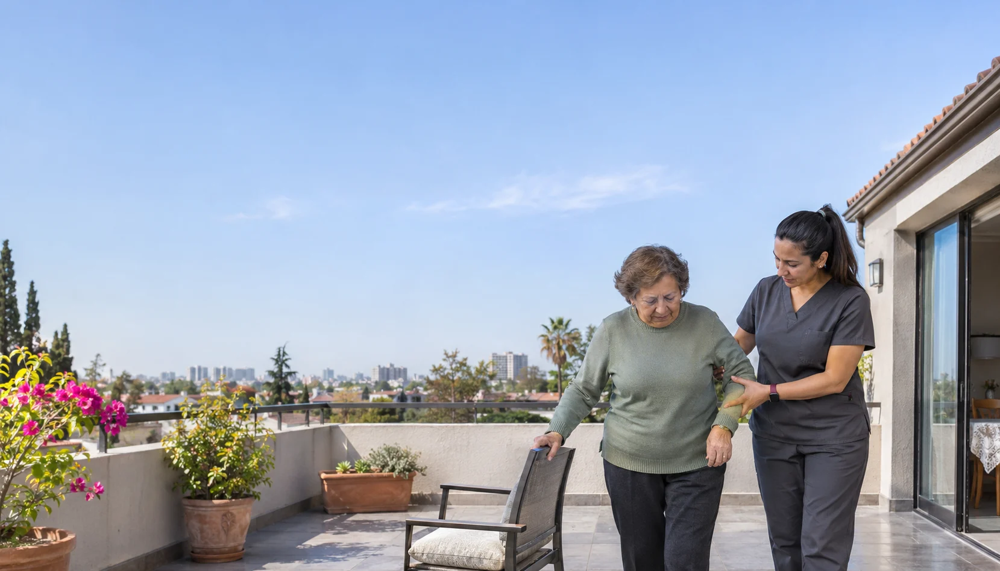
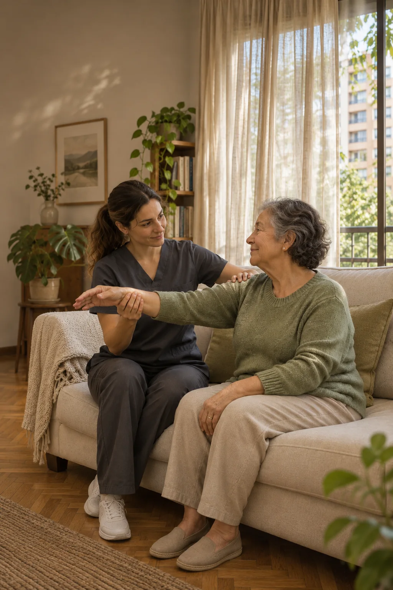

Te escuchamos.
Cuéntanos por WhatsApp qué atención necesitas y en qué comuna. Puedes escribir por ti o por un familiar.


Respiratoria
«buenos profesionales, y la atención personalizada y a domicilio.»


Atención respiratoria en casa, con un trato cercano para niños, adultos y sus familias. Adaptamos la terapia a la evaluación y a la indicación médica cuando corresponda.
Consultar por esta atenciónRehabilitación después de una lesión o cirugía, y atención musculoesquelética. Trabajamos la movilidad y la función con objetivos definidos según tu evaluación e indicación médica.
Consultar por esta atenciónAcompañamos a personas con condiciones neurológicas y a sus familias. La atención se enfoca en la movilidad, el equilibrio y las actividades cotidianas, según cada evaluación.
Consultar por esta atenciónCuéntanos por WhatsApp qué atención necesitas y en qué comuna. Puedes escribir por ti o por un familiar.
Confirmamos cobertura, disponibilidad, valor y requisitos. Asignamos al profesional considerando tu necesidad y ubicación.

En la primera visita, el kinesiólogo evalúa tu situación y escucha tus objetivos, considerando la indicación médica cuando corresponde.
Definimos una atención personalizada y te explicamos cómo acompañar el proceso. Los objetivos se ajustan a tu condición y evolución.

$30.000
CLP · Valor de referencia por sesión
Agendar mi evaluaciónConfirmamos cobertura, disponibilidad y valor antes de coordinar tu atención.
Realizamos atención a domicilio en Santiago. Escríbenos tu comuna por WhatsApp para confirmar cobertura y disponibilidad antes de coordinar una visita.
El valor de referencia es $30.000 CLP por sesión. El valor definitivo, los descuentos y las condiciones aplicables se confirman antes de coordinar tu atención.
Depende del motivo de consulta. Para atención por dolor agudo o rehabilitación postoperatoria se requiere orden médica. Al consultar, te orientamos sobre los requisitos de tu atención y la documentación que corresponda.
Como referencia, la atención respiratoria dura aproximadamente 40 minutos y las demás terapias, unos 50 minutos. La primera sesión puede ser más extensa porque incluye la evaluación inicial. La duración se confirma según la atención requerida.
Escríbenos por WhatsApp indicando tu comuna y qué necesitas. Revisamos la disponibilidad y coordinamos al profesional, el horario, el valor y los requisitos contigo o con el familiar que organiza la atención.
Puedes pagar en efectivo, por transferencia o mediante Webpay con tarjeta de crédito o débito. Confirmamos contigo el medio de pago y sus condiciones al coordinar.
Los datos que ayudan a coordinar una atención para ti o para alguien de tu familia.
Parte por tu comuna y el motivo de consulta. Puedes indicarnos si buscas atención respiratoria, rehabilitación después de una lesión o cirugía, acompañamiento neurológico u otro servicio.
Si escribes por un familiar, cuéntanos para quién es la atención y quién estará a cargo de coordinar. Revisamos contigo la cobertura, la disponibilidad, el valor y los requisitos antes de acordar una visita.
Consultar mi atenciónLa evaluación inicial es el punto de partida para conversar sobre tus objetivos.
En la primera visita, el profesional evalúa tu situación y escucha qué actividades quieres trabajar. También considera la indicación médica cuando corresponde.
El plan se define a partir de esa evaluación. Puedes aprovechar el encuentro para preguntar por los objetivos, la duración de las sesiones y cómo se irá revisando el proceso. Cada atención se adapta a tu condición y evolución.
Consultar mi atenciónCómo organizar la conversación cuando otra persona necesita la atención.
Puedes iniciar la consulta por tu madre, padre, hijo u otro familiar. Indica su comuna y qué atención necesita; así podemos orientarte sobre el servicio y revisar disponibilidad.
Antes de la visita, confirmamos contigo el profesional, el horario, el valor y los requisitos. Si también participan otros familiares o cuidadores, puedes consultar cómo acompañar el proceso y plantear tus dudas al profesional.
Consultar mi atención